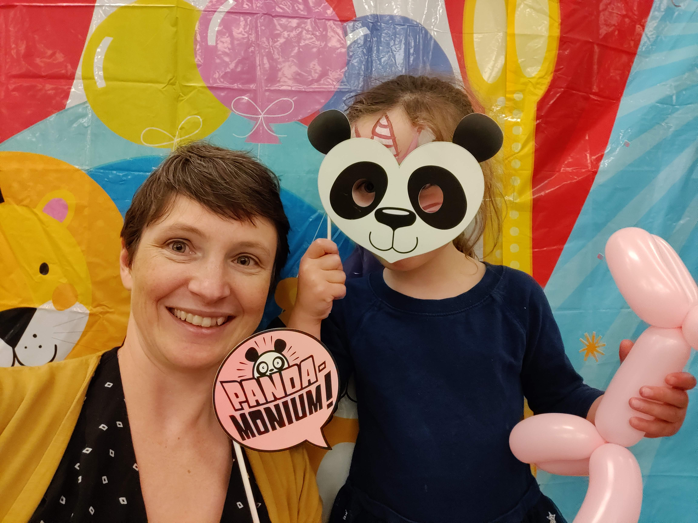
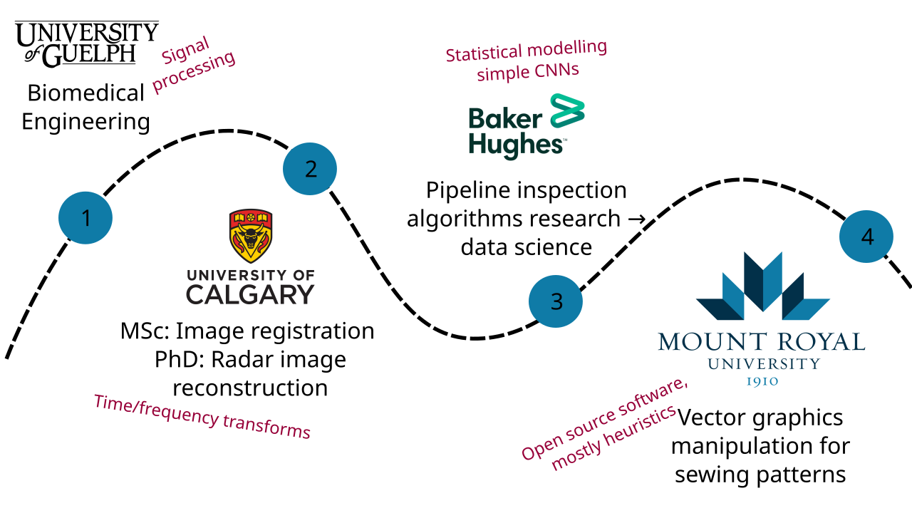
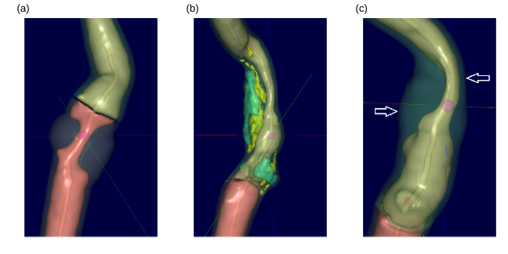
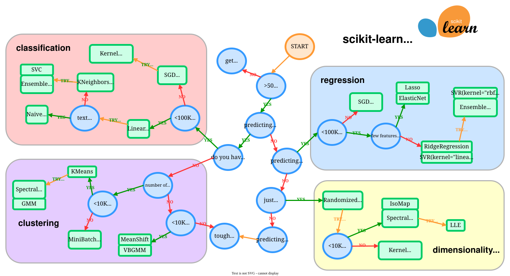

1. Introduction
Code
Slides
 PDF Slides
PDF SlidesMeet your instructor

Name: Charlotte Curtis
Pronouns: She/her
Office: B102-4
Email: ccurtis@mtroyal.ca
Office hours: Book here
My Background

Data processing
This course introduces techniques for ethically and responsibly wrangling and manipulating datasets to make them appropriate for addressing the question at hand. Topics may include cleaning and transforming data, integrity and quality measures, common file formats, feature selection and engineering, and generating features from unstructured sources such as text and images.
Colloquially and lovingly referred to as data wrangling
Grade Assessment
| Component | Weight | Comment |
|---|---|---|
| Tutorial exercises | 10% | Pass/fail |
| Assignments | 35% | 8/12/15 split, in groups |
| Written tests | 35% | x2, split 15%/20% in your favour |
| Final exam | 20% | In lab with limited internet |
A passing grade (50%) must be earned on the weighted average of written tests and final exam to be eligible for a C- in the course
Course Website
Lecture notes, lab and assignment instructions will be hosted on an external site
Rendered at: https://mru-data3464.github.io/f26
Source repo: https://github.com/mru-data3464/f26
Bonus marks may be awarded for substantial corrections to materials, submitted as pull requests
Textbook(s)

- http://www.feat.engineering, additional open source resources as needed
- All the documentation!
Don’t rely on AI summaries!
Speaking of AI…
In this course (and others, and your career), you will need to know: - What to do, and why - How to do it
Note: AI will not be available during the final practical exam
Which of these things seem appropriate for AI assistance?
Tentative weekly plan: Before reading week
| Week | Topic | Chapter (ish) |
|---|---|---|
| 0-1 | Introduction and overview | 1-2 |
| 1-2 | Basic machine learning models and categorical encoding | 3, 5 |
| 2-3 | Exploring, splitting, and sampling data | 4 |
| 4 | Basic numeric data transformations | 6 |
| 5 | Dealing with missing and weird data | 8 |
Written test 1: Thursday, Oct 7
Tentative weekly plan: second half
| Week | Topic | Chapter (ish) |
|---|---|---|
| 6 | Fancy numeric and categorical transformations | 5, 6 |
| 7 | Wrangling text | |
| 9 | Bash scripting and data cards | |
| 10 | 1D signals and audio | |
| 11 | Images and videos (2D signals) | |
| 12 | Presentations and buffer time |
Written test 2: Tuesday, Dec 1
Core courses so far

What do you know about…
- Various probability distributions
- Linear and logistic regression
- Data quality measures
- Data stewardship best practices
- Document parsing, web scraping, audio/video feature detection
- Linear algebra and array programming
- Prediction tasks: classification and regression
- Clustering and anomaly detection
- Evaluation metrics
- Basic data visualization (scatter plots, histograms, etc)
What do you want to know about?
Examples of Subject Matter
- Finance
- Real estate
- Transportation
- Climate
- Politics
- Biology
- Chemistry
- Malware
Examples of Data types
- Unstructured text
- Structured text (e.g. csv, HTML)
- Word documents
- Images
- Audio
- Video
Case study: risk of ischemic stroke

Chapter 2: http://www.feat.engineering/stroke-tour
- Arterial stenosis can predict risk
- Plaque composition plays a role
- Features extracted from CT images
- Other risk factors (demographics, lifestyle) added to dataset
Many decisions in the data analysis process are subjective - I will often make different decisions than the textbook
From data to prediction
- Understand the problem and define the task
- Collect, anonymize and organize the data
- Extract features
- Explore the dataset
- Select a model and preprocess
- Train the model
- Evaluate, fine-tune, iterate
- Deploy and maintain your system
Applied to the stroke example
- What is the problem? What do we need to do?
- (Collect, anonymize and organize the data) - Done for us
- (Extract features) - Done for us
- Explore the dataset
- A critically important component, DO NOT OFFLOAD TO AI
- This can even be where the data sciencing stops and we jump straight to visualizations and communicating insights!
- Check out Data for Good case studies
5. Select a model and preprocess

7. Evaluate, fine-tune, and iterate
- In my example, I jumped straight to testing on the held-back test set
- This is a terrible idea! We have no confidence that the model actually worked. We could be:
- overfitting to the training data
- making incorrect assumptions about the data
- applying inappropriate transformations, or missing some
- using the wrong model altogether
Validation needs to happen before the final testing
Coming up next
- Lab: basic regression, show me where you’re at
- Lecture: Simple models and evaluation metrics